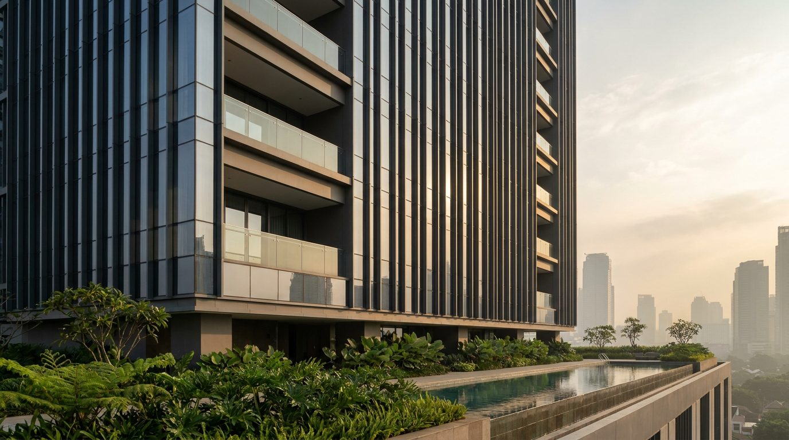
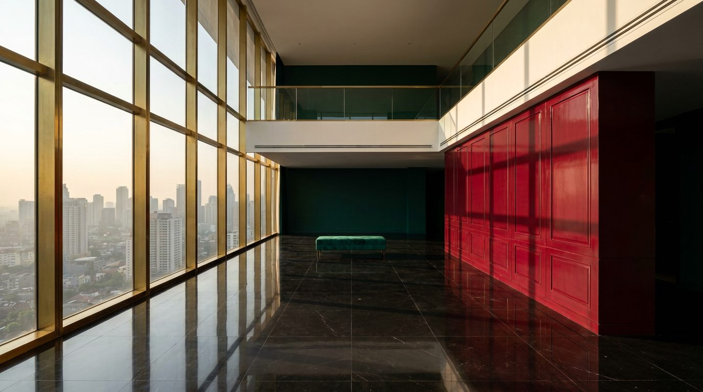

Atlante · INT-ID-02 · Indonesia · Asia
Attico duplex sopra il SCBD, marmo nero lucido e lacca rubino al tramonto
Esempi · esterno e interno


Perché funziona
Loud per densità: rubino laccato, marmo nero lucido e ottone in un solo campo visivo, con la città accesa fuori e una sola lampada dentro. Il cliente di Giacarta compra rappresentanza, cioè un attico dove ricevere alle nove di sera, non una casa daurna. Per Poetica serve come estremo loud asiatico e come prova di tenuta del catalogo sotto una luce calda e radente: il legno e il marmo devono restare leggibili, non diventare macchie. Non deve scivolare nel club di hotel: niente velluto ovunque, niente colonne, niente motivi batik usati come decorazione, niente oro.
Architettura · elementi riproducibili
- vetrata a tutta altezza 3600x3200 mm, montanti in ottone 40 mm a interasse 1200 mm
- pavimento in marmo nero lucido, lastre 1200x1200 mm, fuga 1,5 mm, battiscopa 100 mm
- boiserie laccata rubino, modulo 600 mm, altezza 2700 mm, gola di ombra 8 mm
- soppalco a 3200 mm, parapetto in vetro 12 mm, corrimano in ottone 50 mm
- sospensione cilindrica in ottone, diametro 400 mm, fondo a 1900 mm dal pavimento
- tavolo da pranzo in marmo nero 2800x1100 mm, bordo 40 mm, base in ottone
- terrazza 40 mq con pergola in alluminio brunito, doghe 100 mm, parapetto 1100 mm
Fatto verificato: District 8 al SCBD è un complesso di 10 torri e del centro commerciale ASHTA su 4,8 ettari, avviato nel 2013 e completato nel 2017 su progetto di Airmas Asri con Forrec per Agung Sedayu Group; ospita un hotel, sette torri residenziali, appartamenti serviti Oakwood e il primo Langham Hotel and Residence del Sud-est asiatico.
Fatto verificato: la Treasury Tower del complesso misura 279,5 m, ha 61 piani ed è la quinta torre più alta di Giacarta; a District 8 affianca due torri per uffici, un hotel e sette torri residenziali.
Fatto verificato: il SCBD (Sudirman Central Business District) è un distretto direzionale integrato di 0,45 km2 a South Jakarta, intitolato al generale Sudirman.
Valutazione: il loud qui è densità e ora del giorno, non oro; una sola parete rubino, un marmo nero e una sorgente calda. Contrasta con int-id-01 per luce (notte contro mezzogiorno equatoriale) e per tipologia (torre contro padiglioni aperti).
Luce
Prompt di generazione (EN)
Empty double-height living room of a duplex attic on the top floor of a residential tower at District 8, SCBD, Jakarta. 6.2 m void, full-height glazing 3600 x 3200 mm with 40 mm brass mullions at 1200 mm centres, polished black marble floor in 1200 x 1200 mm slabs with a 1.5 mm joint, one wall of ruby lacquer panelling in 600 mm modules with an 8 mm shadow gap at 15% sheen, a mezzanine at 3200 mm with a 12 mm glass balustrade and a 50 mm brass handrail, one end wall in deep emerald matte lacquer. Only one low bench in emerald velvet. One key light: late afternoon western sun at 22 degrees, 4900 K, entering under the mezzanine and cutting a hard grid of mullion shadows across the black marble and the ruby wall, the hazy city outside held one stop down, no interior lighting, no fill. 24 mm lens at 1.35 m, two-point perspective, verticals parallel, controlled specular highlights on the marble, deep blacks, saturated ruby and emerald accents, no people, no text, no logos.